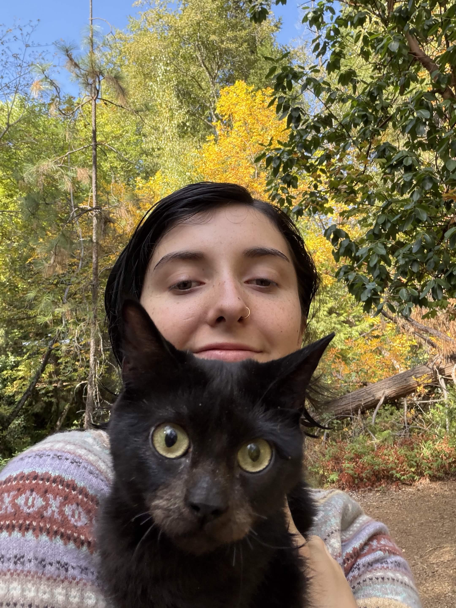

My Homepage

Hello, I'm Violet! Let me tell you about myself :)
I am currently 20 years old and I am a transfer student at Southern Oregon University studying computer science. I am interested in quantum computing, as I think it is fascinating what quantum computers are able to do. I've provided a link below going more into the details of quantum computing! Currently, I work at the DOS (Dean of Students) at SOU. I have my cat Fish with me (the cat in the picture above), she's a menace because she likes to bite me even though I give her kisses. I am additionally getting another cat soon, her name is Shmiggle and she is hairless.
I love playing video games for fun! Usually I play strategy games and shooters, typically with any downtime I have. Currently, I'm playing two campaigns as a player. I love playing D&D with my friends as it creates amazing memories! Drawing digitally and traditionally allows me to express creativity and share it with my friends. I love coming up with new ideas for characters and settings.My Interests
Video Games
Dungeons & Dragons
Art
Click on the links above to learn more about me! Thanks for reading my home page!